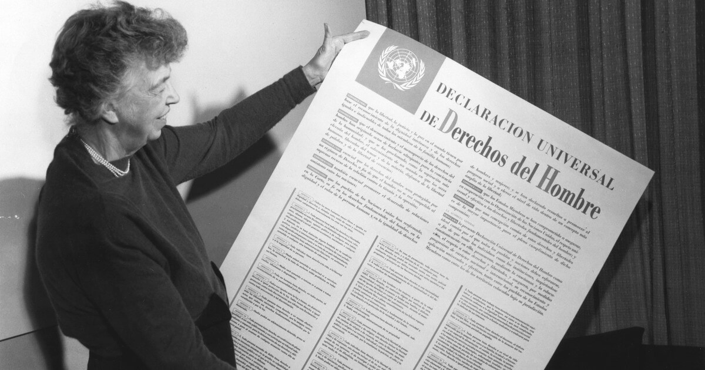
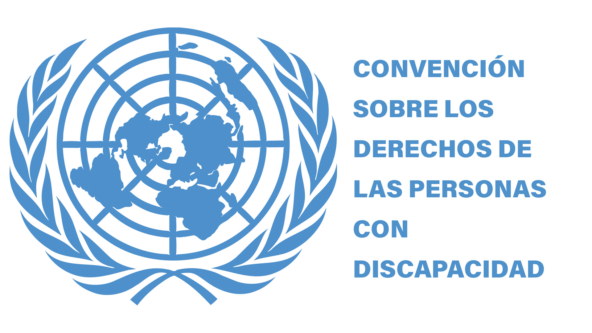

Marco legal internacional en materia de derechos de las personas con discapacidad
El marco legal internacional en materia de derechos de las personas con discapacidad está constituido por todas aquellas herramientas legales internacionales que busca garantizar a las personas con discapacidad el acceso a sistemas de transporte, sitios públicos, información, educación, al empleo, es decir, a las cosas elementales a las que toda persona tiene derecho.
Las principales herramientas legales que El Salvador a ratificado en materia de derechos de las personas con discapacidad son:
Declaración Universal de los Derechos Humanos (1948):
Esta declaración es el instrumento que universaliza los derechos humanos y visibiliza la necesidad de crear condiciones de igualdad, ya que esta nace después de las barbaries de la segunda guerra mundial, ya que, como toda guerra, dejo secuelas permanentes no solo en las familias de los fallecidos, sino también en las personas que a raíz de esta adquirieron algún tipo de discapacidad
Según el libro “Derechos Humanos: Historia y conceptos básicos”, “Ese histórico documento, inspirado en las declaraciones de derechos del siglo XVIII, reconoce que todos los seres humanos somos iguales en derechos, que los derechos son inherentes a nuestra condición humana y que nos pertenecen a todos y todas, sin limitaciones de fronteras” (Fundación Juan Vives Suriá, 2010, p. 17)
Convención de las Naciones Unidas sobre los Derechos de las Personas con Discapacidad (2006)
según la Guía sobre discapacidad y desarrollo (2013), esta convención es “es un tratado vinculante para los Estados Partes que la han firmado, que ratifica los derechos de las personas con discapacidad a ejercer plenamente de sus derechos y libertades fundamentales, en igualdad de condiciones con los demás” (COCEMFE et al., 2013, p. 17)
Por mencionar algunos artículos en los que se deja claro el propósito de la convención están el artículo 1, que establece que el propósito del convenio es promover proteger y asegurar el goce pleno de los derechos en igualdad de condiciones; el artículo número 2 qué define la discriminación por motivos de discapacidad como cualquier distinción exclusión o restricción por motivos de discapacidad que obstaculice el Reconocimiento goce o ejercicio de los derechos, así a lo largo de la convención.
